2026-10-05 작업 리포트
CI 복구 · Edge 접근성 · 공용 버튼(F-11) · SidebarShell 로고 · Edge 크기 값 이동(F-07) · Storybook 메뉴 정리 · Edge 촬영 설정/패널 접기 공개
1. 비교 기준과 검증 결과
| 항목 | 기준 |
|---|---|
| AS-IS | 4c414bf — 오늘 작업 전 GitHub main. 이 커밋을 별도 폴더에서 다시 빌드해 캡처했다(과거 이미지 재사용 아님). |
| TO-BE | 2818cda — 오늘 마지막 병합 후 main. 같은 방식으로 빌드·캡처. |
| 조건 | 같은 Story·같은 조작·같은 viewport(Edge 1440×1000, 컴포넌트 1280×900 등), dark, 새 브라우저 context, 마우스 화면 밖. Omarchy(Linux) Chromium. |
| 표시 | 주황 박스 = AS-IS, 청록 박스 = TO-BE. 번호가 같으면 같은 변경이다. 박스 위치는 두 이미지의 픽셀 차이 영역을 자동 탐지한 뒤 사람이 확인해 정했다. 원본은 각 절의 링크에서 그대로 볼 수 있다. |
| 범위 | GitHub main이 오늘 바뀐 전체 범위. 9월 27일에 로컬 커밋된 Edge 촬영 설정·패널 접기 통합과 Storybook 메뉴 정리가 오늘 처음 공개돼 함께 포함했다. 전체 diff |
| 검증 | 통과 main CI(2818cda): lint·타입·unit·Storybook 상호작용/접근성·패키지·시각 비교. 9월 21일부터 실패하던 CI가 오늘 복구됐다. |
캡처 기록: AS-IS manifest TO-BE manifest 박스 좌표
2. 변경 목록
| PR / 커밋 | 내용 | 화면 변화 |
|---|---|---|
c2f4a18 (9/27) | Edge 설정 Capture 탭, 좌우 패널 접기 (PR #18 통합) | 있음 §3·§4 |
2d697e6 (9/27) | Storybook 메뉴: 별도 최상위 그룹을 기존 Components·Guides 아래로 | 있음 §5 |
| #19 | CI 실패 원인 수정(테스트의 페이지 패키지 경로), Node 20 고정, DatasetSelect 기준선 승인 | 기준선 §6·§11 |
| #20 | Edge·Platform 로그인 화면에 header·main·h1 구조 | 없음 §10 |
| #21 | SidebarShell 로고 교체 | 있음 §7 |
| #22 | F-11: 직접 만든 버튼 5곳을 공용 Button·TextButton으로 통일 | 있음 §8 |
| #23 | F-07 1단계: Edge·패턴 전용 크기 값을 소유 패키지로 이동 | 화면 동일 §9 (문서 문구만) |
3. Edge 작업 화면 — 좌우 패널 접기
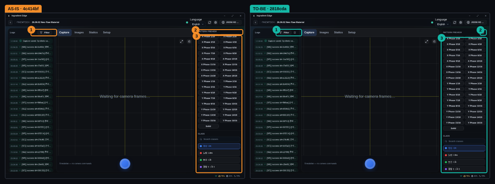

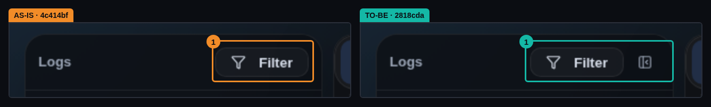

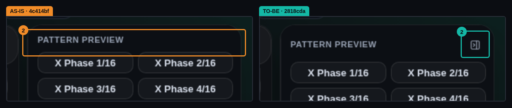
- 1Logs 헤더 오른쪽에 접기 버튼 추가. Filter 버튼은 그만큼 왼쪽으로 이동.
- 2우측 패널 헤더(Pattern Preview)에 접기 버튼 추가.
- 3헤더 줄이 생기면서 우측 패널 내용(패턴 버튼·Class 목록)이 약 13px 아래로 이동.
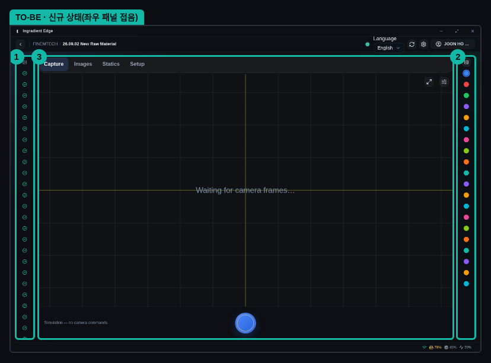
- 1왼쪽 Logs 패널이 280px → 58px로 접히고 로그 상태 아이콘만 남는다(키보드로 각 항목 선택 가능).
- 2오른쪽 패널도 58px로 접히고 클래스 색 점만 남는다. 맨 위 버튼으로 다시 펼친다.
- 3가운데 촬영 화면이 넓어진다. 768px 창에서도 가운데 최소 폭 640px은 유지된다.
현재 Story: 패널 접기 workflowAS-IS 원본TO-BE 원본


4. Edge 설정 — Capture 탭
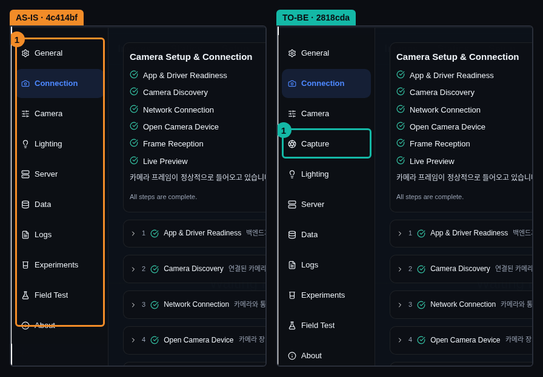
- 1설정 탭이 10개 → 11개. Camera와 Lighting 사이에 Capture 탭이 추가됐다.
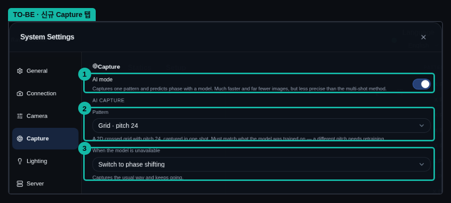
- 1AI mode 스위치: 패턴 한 장과 모델로 위상을 예측(빠름) ↔ 여러 장 촬영(정확).
- 2AI 촬영에 쓸 Pattern 선택(모델이 학습한 pitch와 같아야 함).
- 3모델을 쓸 수 없을 때의 동작: 위상천이로 전환 / 중지 후 알림.
선택 값은 다른 탭으로 이동하거나 설정 창을 닫았다 열어도 유지된다(자동 테스트로 확인).
5. Storybook 메뉴 정리
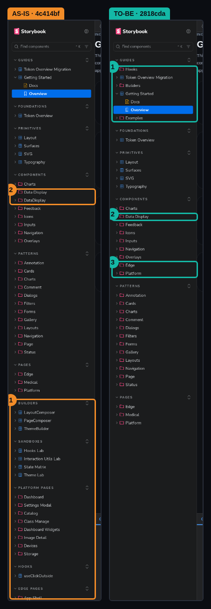
- 1최상위 그룹 11개 → 6개. Builders·Sandboxes·Hooks는 Guides 아래(Builders·Examples·Hooks)로 이동.
- 2이름이 갈려 있던
Data Display·DataDisplay를 하나로 합침. - 3Platform Pages·Edge Pages의 부품 스토리는 Components → Platform / Edge 아래로 이동.
기존 Story 주소는 그대로 열린다. Pages 화면 스토리와 상태가 똑같이 겹치던 Dashboard 부품 스토리 4개만 정리했다(891 → 887개).
6. Edge DatasetSelect 기준선 갱신
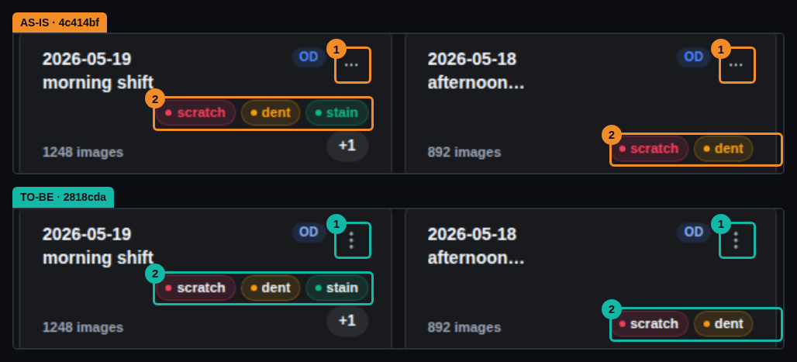
- 1카드 더보기 아이콘: 가로 점
…→ 세로 점⋮(공용 메뉴 버튼). - 2클래스 칩 글자: 클래스 색 → 밝은 기본 글자(대비 개선). 앞의 색 점은 그대로.
4a85c21에서 이미 바뀌었다. 그 뒤 CI가 고장 나 시각 비교가 돌지 않았고, 오늘 CI를 고친 뒤 차이가 드러나 승인 후 기준 사진만 교체했다. 그래서 이 절의 AS-IS/TO-BE는 예전·새 기준 사진(CI Ubuntu 캡처)이다.7. SidebarShell 로고
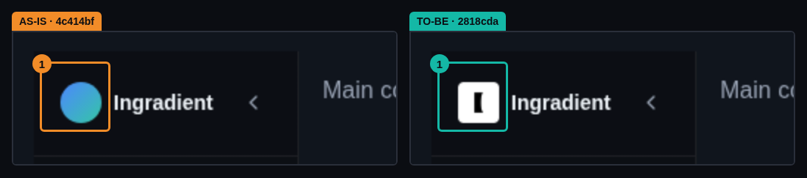
- 1그라데이션 원형 마크 → 제공해 주신 로고(
Frame 119.png). 데모 4개 모두 적용. 접힌 상태에서는 로고에 "Ingradient" 대체 텍스트.
8. 공용 버튼 통일 (F-11)
같은 계층의 공용 컴포넌트를 쓰지 않고 버튼을 직접 다시 만든 곳을 공용 Button·TextButton으로 바꿨다. 크기·포커스·비활성 상태가 다른 화면과 같아진다.
EmptyState
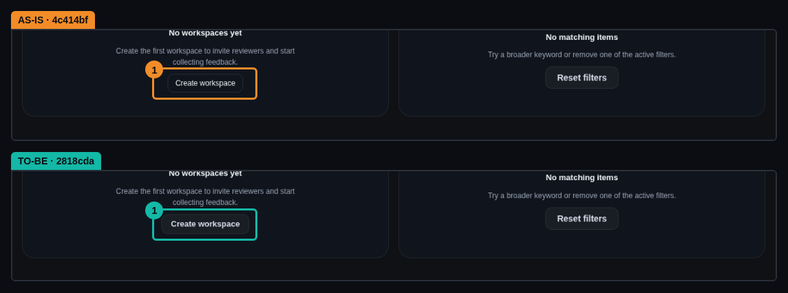
- 1작은 테두리 버튼 → 공용 버튼. 옆 카드의 "Reset filters"와 같은 모양.
SelectionActionBar
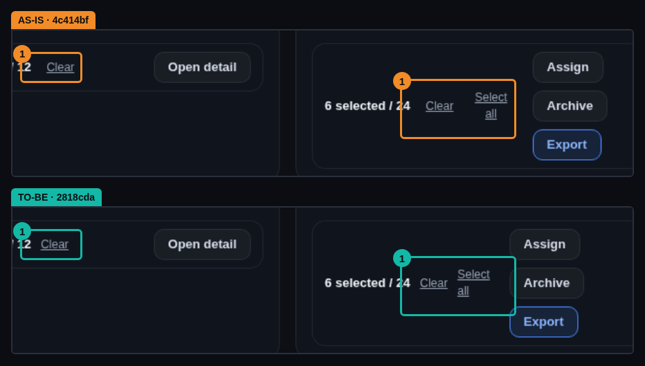
- 1"Clear"·"Select all" → 공용 TextButton. 밑줄은 결정하신 대로 항상 표시. 브라우저 기본 여백이 사라져 조금 촘촘해지고, 오른쪽 버튼들도 그만큼 왼쪽으로 붙는다.
FilterBarLayout
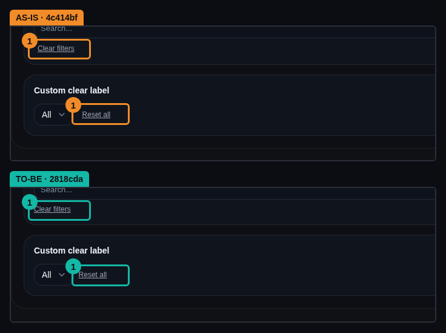
- 1"Clear filters"·"Reset all" → 공용 TextButton(밑줄 항상). 왼쪽 기본 여백만 제거.
ErrorBoundary
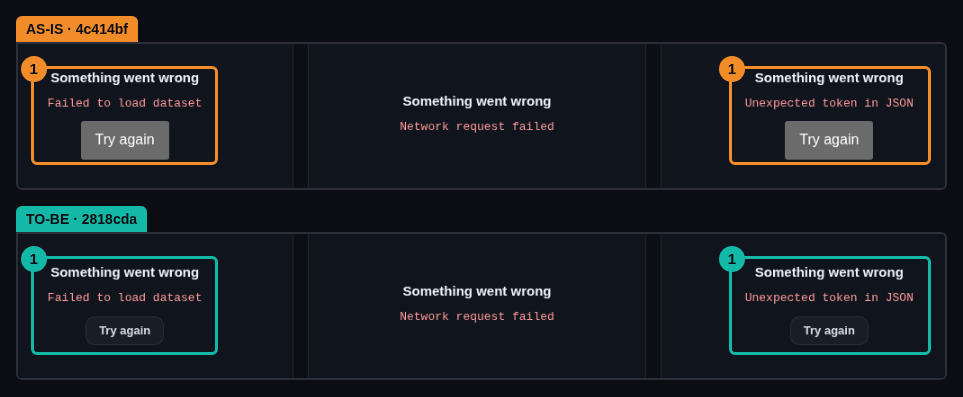
- 1"Try again": 브라우저 기본 회색 버튼 → 디자인 시스템 버튼.


함께 바뀐 것: TextButton에 키보드 포커스 링 추가(마우스 사용 시에는 보이지 않음). 댓글 입력창은 공용 입력창보다 포커스 표시가 뚜렷해 그대로 두었다.
현재 Story: SelectionActionBarTextButton 밑줄 항상PR #22 변경 파일
9. Edge 크기 값 이동 (F-07 1단계)
공용 토큰에 섞여 있던 Edge 전용 크기 10개(촬영 바·그리드·히스토그램·데이터셋 카드·로그 상세)는 edge-pages의 edgeGeometry로, 색 편집기 크기 2개는 해당 패턴으로 옮겼다. 값이 같아 실제 화면은 바뀌지 않는다.
| 화면 | 변경 전후 픽셀 비교 |
|---|---|
| Edge 작업 화면(촬영) | 0 byte 차이 |
| Edge 작업 화면 — 로그 상세 팝업(hover) | 0 byte 차이 |
| Edge 로그 필터 열림 | 0 byte 차이 |
| Edge 데이터셋 선택 | 0 byte 차이 |
| 색 편집기(ColorEditorPlane) | 0 byte 차이 |
비교 방법: PR #23 브랜치에서 변경 전/후를 각각 빌드해 같은 조건으로 캡처한 PNG의 바이트를 모두 비교했다. 보이는 변화는 Token Overview의 설명 문구뿐이다.
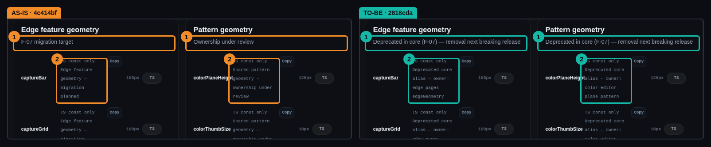
- 1섹션 설명: "F-07 migration target / Ownership under review" → "Deprecated in core (F-07) — removal next breaking release".
- 2각 값의 용도: "migration planned" → "Deprecated core alias — owner: edge-pages edgeGeometry / color-editor-plane pattern".
--ig-layout-capture-bar 등)는 배포 패키지(tokens.css)를 쓰는 외부 프로젝트를 위해 삭제하지 않고 "폐기 예정"으로 남겼다. 다음 큰 버전에서 릴리스 노트와 함께 지운다(2단계).현재 Story: Token Overview 레이아웃PR #23 변경 파일
10. 접근성 구조 (화면 변화 없음)
보조기기가 화면 구조를 읽을 수 있도록 Edge 공용 셸의 제목줄을 header, 본문을 main으로 감쌌다. Workspace의 프로젝트/데이터셋 이름은 h1, Setup 패널 제목은 h2, Platform 로그인·가입 페이지는 main으로 지정했다. 여백과 글꼴을 초기화해서 모양은 그대로다.
| 대상(기본 axe 감사) | 변경 전 | 변경 후 |
|---|---|---|
| Edge 0.0.5 감사 시나리오 22개 | 22개 모두 위반 (main 영역 없음, 내용이 영역 밖, h1 없음) | 0개 |
| Platform 로그인 | main 영역 없음 1건, 영역 밖 내용 6건 | 0건 |
| 범위 제외 | Medical 구버전 데모, Theme 예시(문서용 화면) — 제품 화면이 아님 | |
11. CI 복구와 작업 환경
- 원인: unit 테스트가
@ingradient/edge-pages를 빌드 산출물(lib/)로 찾았다. CI는 빌드 전에 테스트를 돌려서lib/가 없어 9월 21일부터 매번 실패했다. 로컬에서는 오래된lib/가 남아 있어 실패가 가려져 있었다. - 수정: 테스트 설정이 TypeScript·Storybook과 같은 소스 경로를 쓰도록 맞추고, CI와 같은 Node 20을
.nvmrc로 고정했다. - 작업 환경: 모든 작업은 Omarchy(Linux)에서 진행한다. Node 20, Playwright, GitHub(simonkang76) 인증을 갖췄고 Mac은 확인용이다.
- 시각 비교 기준: Omarchy와 CI(Ubuntu)는 한글·고정폭 글꼴 렌더링이 달라서, 기준 사진은 CI 캡처로만 갱신한다. 로컬 사진으로 갱신하지 않는다.
12. 남은 일
| 항목 | 설명 |
|---|---|
| Edge 0.0.5 시각 기준선 | 완료 — §13의 19장을 Simon 승인 후 등록(PR #24). |
| 보안 취약점 | 완료 — §14. 배포 0건, 전체 12건(심각 0). 남은 것은 메이저 업그레이드 필요. |
| 접근성 검사 범위 | Edge 59개 화면 중 19개 경로만 감사 중. 나머지 40개 흐름 확대와 CI 연결. |
| Storybook 10.6 | 업그레이드 가능. 브랜치에서 CI로 검증하는 방식이면 안전하다. |
| F-07 2단계 | 폐기 예정 CSS 변수 삭제. 다음 큰 버전 릴리스 때 진행. |
13. Edge 0.0.5 시각 기준선 — 승인·등록
지금까지 시각 비교는 옛 Edge 0.0.1 화면 3장만 지키고 있었다. 현재 작업 중인 0.0.5 화면 19개를 비교 대상에 추가했다(PR #24). 아래는 CI(Ubuntu)가 찍은 사진 그대로이며, Simon 승인 후 기준 사진으로 등록했다. 이제 이 화면들이 의도치 않게 바뀌면 CI가 잡아낸다.
| 항목 | 내용 |
|---|---|
| 대상 | route·접근성 probe와 같은 고정 목록 tests/probes/edge-routes.mjs(로그인 4, 데이터셋 선택 6, 작업 화면 9) |
| 캡처 조건 | 1280×720, dark, 애니메이션·전환 정지, 네트워크·글꼴·이미지 로딩 완료 후. 시각 표시는 고정 테스트 데이터(9:22:32 AM)라 실행마다 같다. |
| 안정성 | Omarchy에서 2회 연속 캡처 19/19 동일. CI 첫 실행: 기존 34장 통과, 새 19장은 기준 없음으로 생성(예상대로 실패 처리). |
로그인 (4)

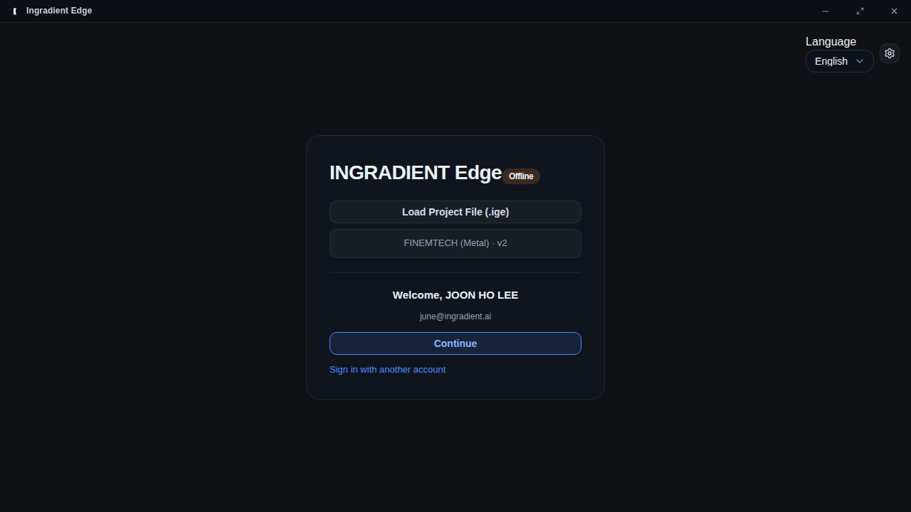
Story 열기 ·
login-offline
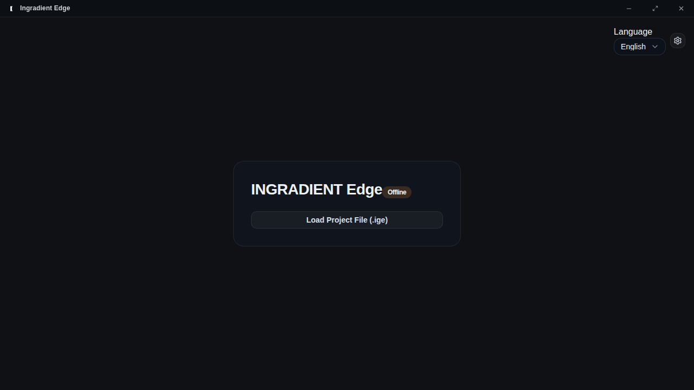
Story 열기 ·
login-offline-no-package
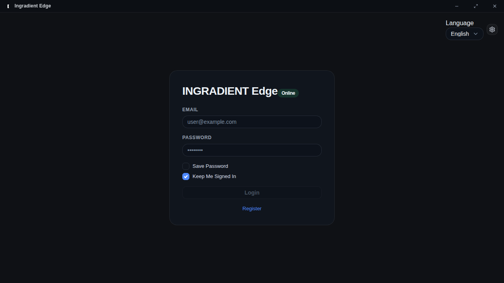
Story 열기 ·
login-online-form
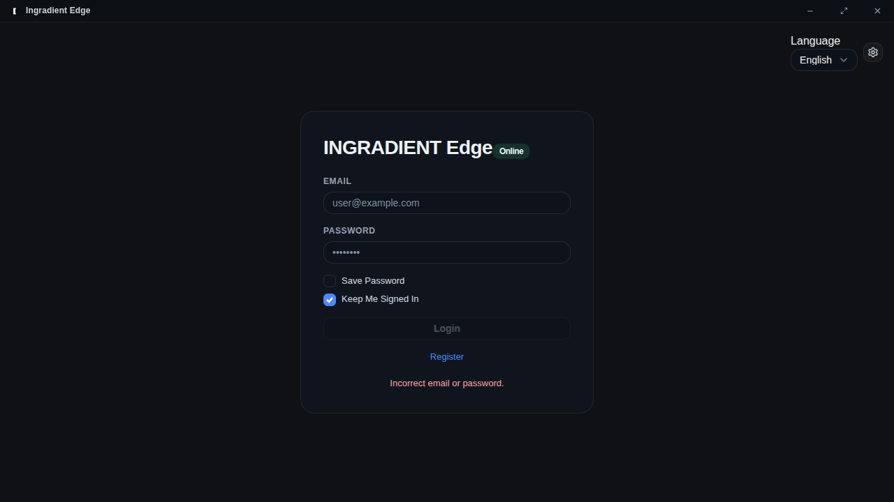
Story 열기 ·
login-error데이터셋 선택 (6)

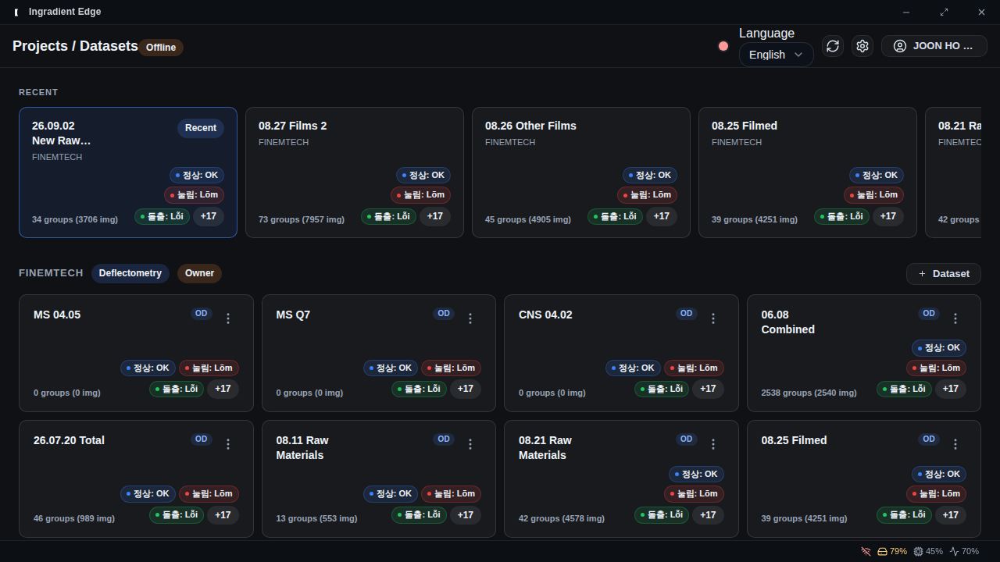
Story 열기 ·
datasetselect-offline
Story 열기 ·
datasetselect-online
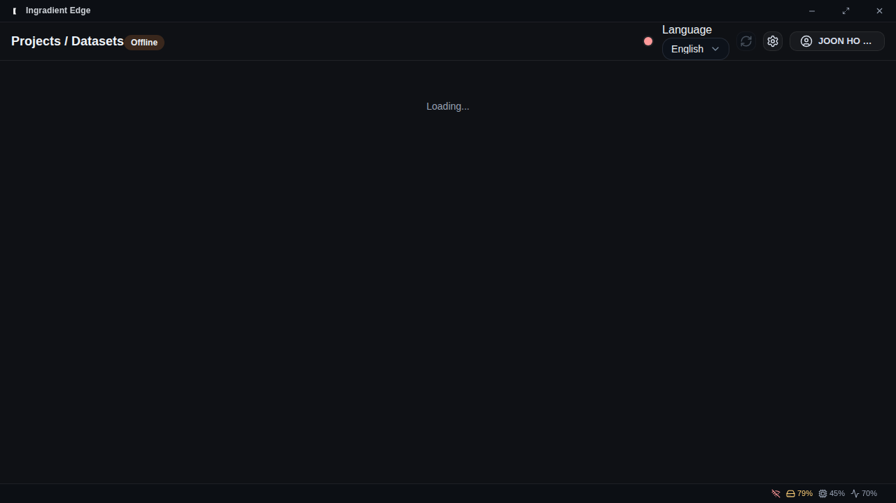
Story 열기 ·
datasetselect-loading
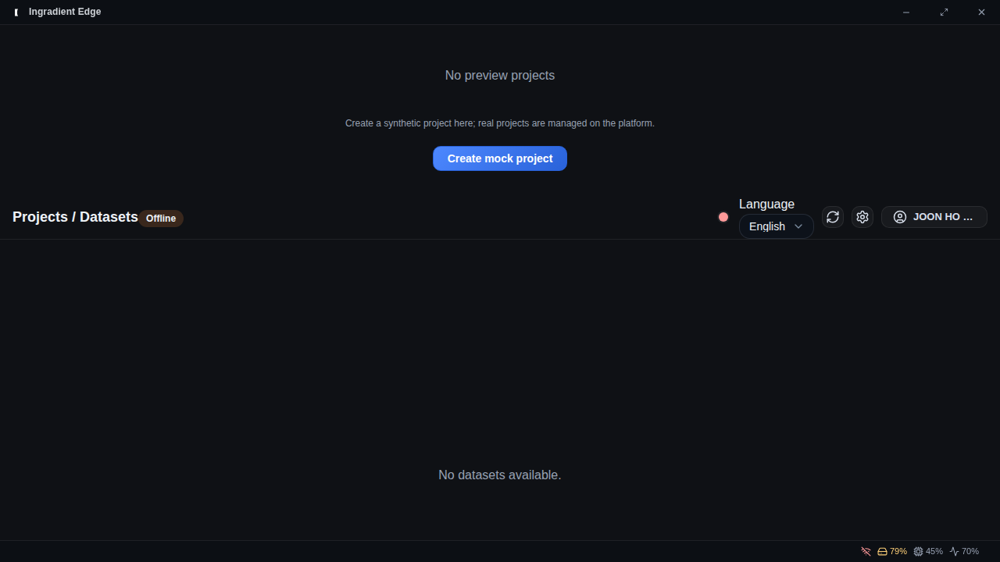
Story 열기 ·
datasetselect-empty
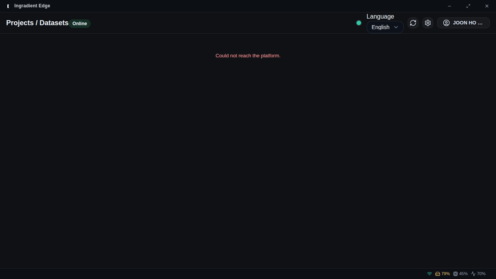
Story 열기 ·
datasetselect-fetch-error
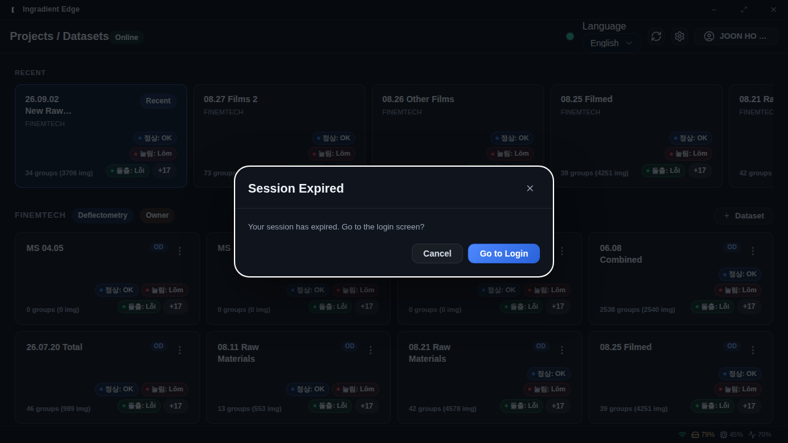
Story 열기 ·
datasetselect-session-expired작업 화면 (9)

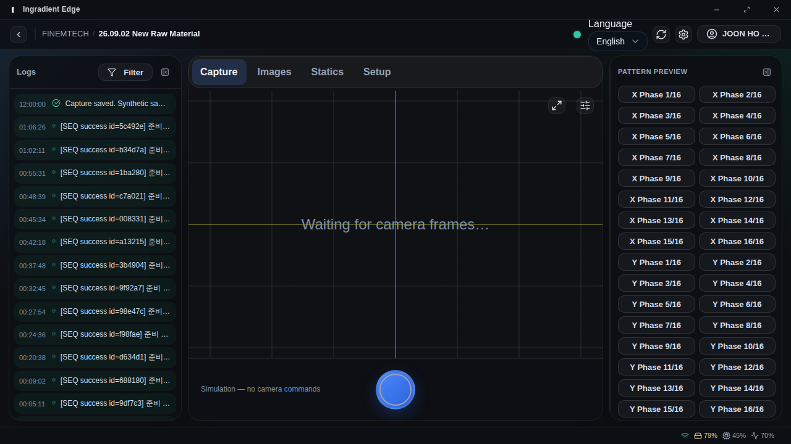
Story 열기 ·
workspace-capture
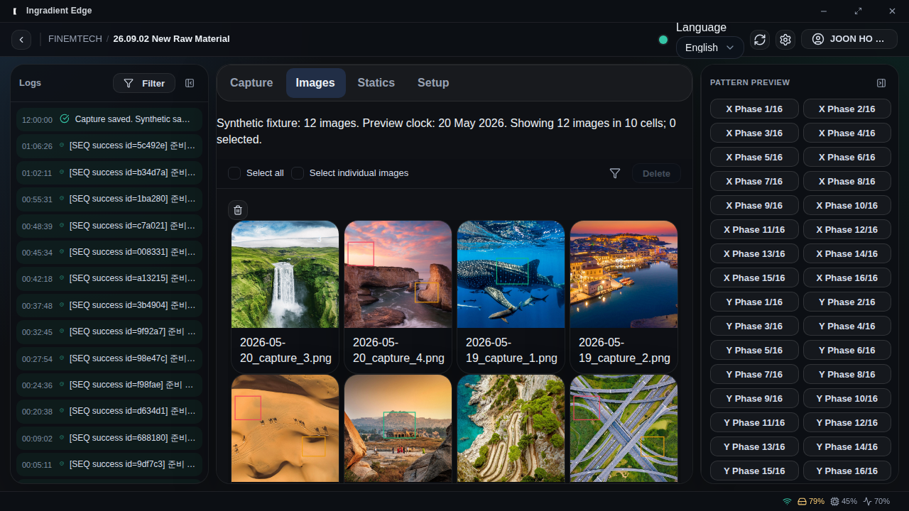
Story 열기 ·
workspace-images
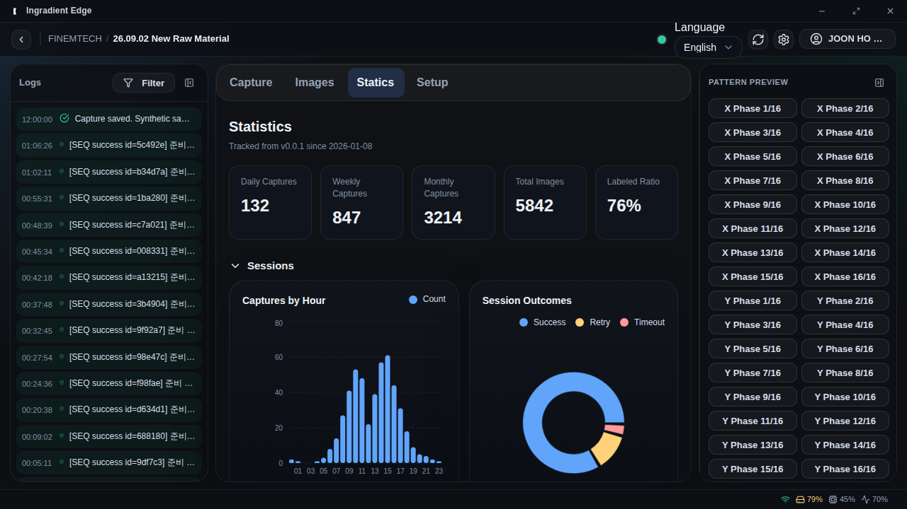
Story 열기 ·
workspace-statics
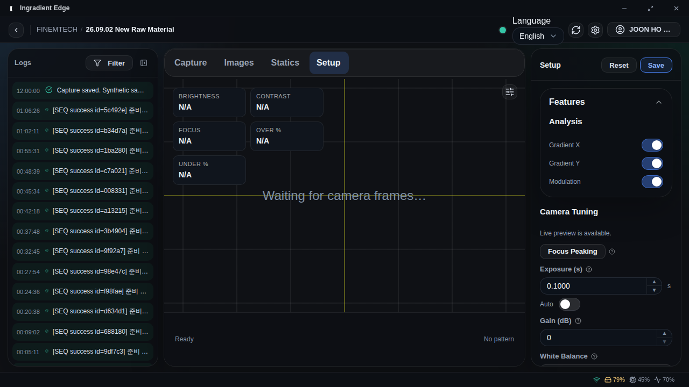
Story 열기 ·
workspace-setup
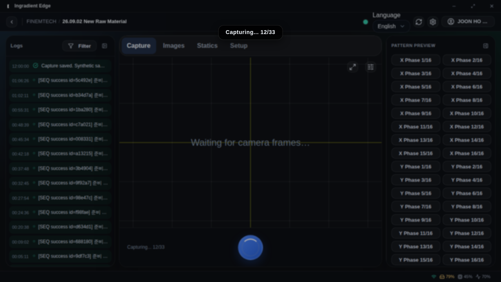
Story 열기 ·
workspace-capturing
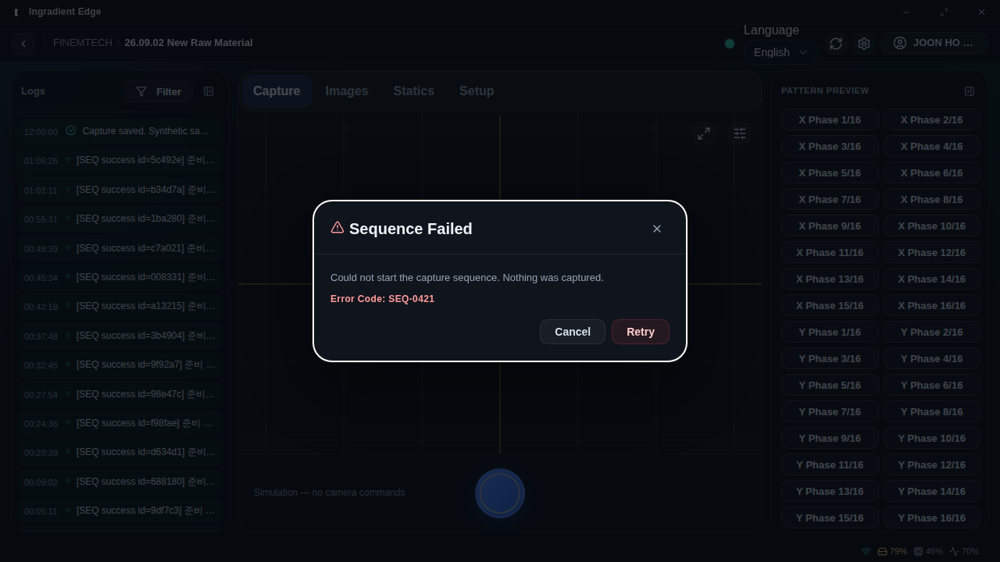
Story 열기 ·
workspace-sequence-failed
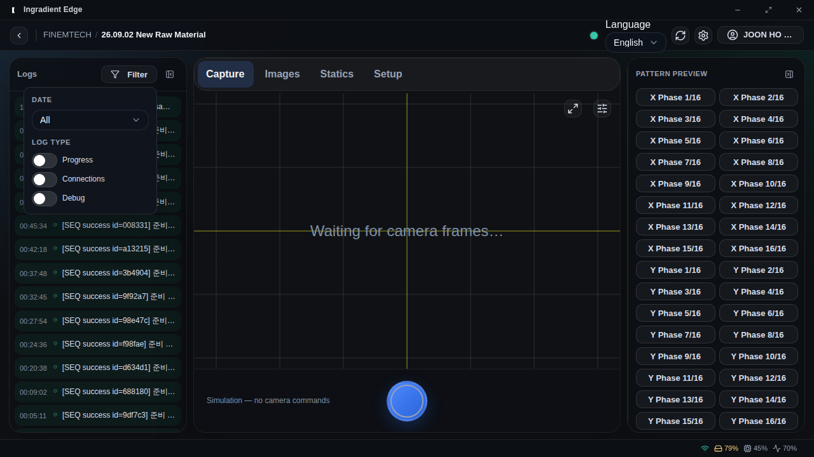
Story 열기 ·
workspace-log-filter-open
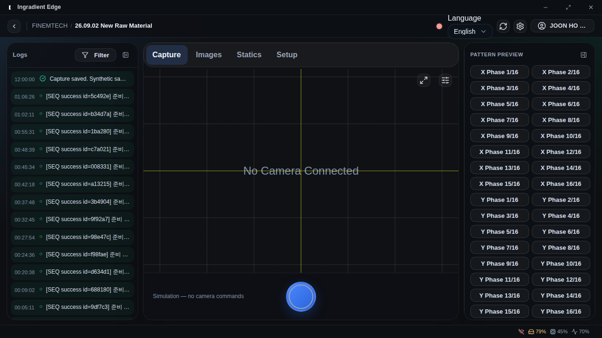
Story 열기 ·
workspace-offline
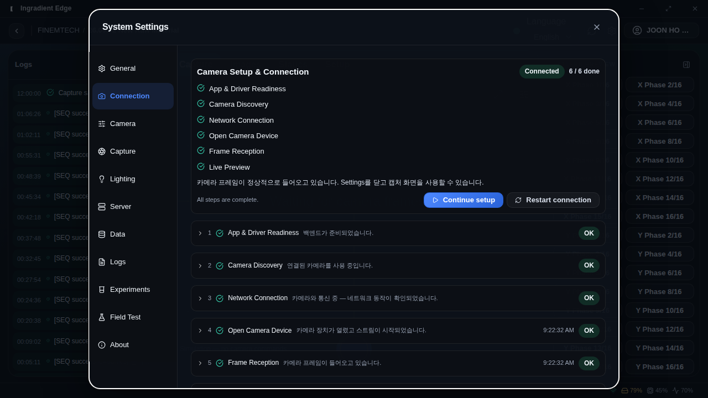
Story 열기 ·
workspace-settings14. 보안 취약점 정리 — 완료
화면 변화 없음(CI 시각 비교 53장 모두 동일). PR #25
| 구분 | 변경 전 | 변경 후 | 내용 |
|---|---|---|---|
배포 패키지(--omit=dev) | 3건 (높음 2·보통 1) | 0건 | styled-components 6.3.11→6.5.3로 postcss 8.5.29·nanoid 3.3.20 반영. 큰 버전 변경 없음. |
| 개발 도구 포함 전체 | 31건 (심각 4) | 12건 (심각 0) | vitest 계열 4.1.4→4.1.11 외 12개 그룹을 현재 범위 안에서 갱신. |
- 남은 12건: 모두 개발 도구이며 큰 버전 업그레이드가 필요하다(
stylelint17,vite8, Storybook MCP addon 10.6). Storybook 업그레이드 작업에서 함께 검토한다. - 막혔던 점:
npm audit fix가 저장소의 자기 참조 workspace 링크 때문에 npm 내부 오류로 멈춰 패키지별로 적용했다. PR 전 검증에서 lockfile 불일치(새 vitest가 쓰는esbuild누락)를 찾아 동기화했다. 그대로 올렸다면 CI 설치 단계에서 실패했을 문제다. - 검증: 깨끗한
npm ci→ unit 464, Storybook 888, 패키지·외부 소비 검사, CI 시각 비교 53/53.
작성: 2026-10-05 · 기준 4c414bf → 2818cda · Storybook 링크는 Omarchy의 Tailscale 주소다(같은 Tailscale 네트워크의 기기에서만 열린다).